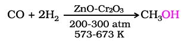
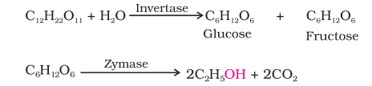

Methanol and ethanol are among the two commercially important alcohols.
1. Methanol
Methanol, CH3OH, also known as 'wood spirit', was produced by destructive distillation of wood. Today, most of the methanol is produced by catalytic hydrogenation of carbon monoxide at high pressure and temperature and in the presence of ZnO – Cr2O3 catalyst.
Methanol is a colourless liquid and boils at 337 K. It is highly poisonous in nature. Ingestion of even small quantities of methanol can cause blindness and large quantities causes even death. Methanol is used as a solvent in paints, varnishes and chiefly for making formaldehyde.
2. Ethanol
Ethanol, C2H5OH, is obtained commercially by fermentation, the oldest method is from sugars. The sugar in molasses, sugarcane or fruits such as grapes is converted to glucose and fructose, (both of which have the formula C6H12O6), in the presence of an enzyme, invertase. Glucose and fructose undergo fermentation in the presence of another enzyme, zymase, which is found in yeast.
Ingestion of ethanol acts on the central nervous system. In moderate amounts, it affects judgment and lowers inhibitions. Higher concentrations cause nausea and loss of consciousness. Even at higher concentrations, it interferes with spontaneous respiration and can be fatal
In wine making, grapes are the source of sugars and yeast. As grapes ripen, the quantity of sugar increases and yeast grows on the outer skin. When grapes are crushed, sugar and the enzyme come in contact and fermentation starts. Fermentation takes place in anaerobic conditions i.e. in absence of air. Carbon dioxide is released during fermentation.
The action of zymase is inhibited once the percentage of alcohol formed exceeds 14 percent. If air gets into fermentation mixture, the oxygen of air oxidises ethanol to ethanoic acid which in turn destroys the taste of alcoholic drinks.
Ethanol is a colourless liquid with boiling point 351 K. It is used as a solvent in paint industry and in the preparation of a number of carbon compounds. The commercial alcohol is made unfit for drinking by mixing in it some copper sulphate (to give it a colour) and pyridine (a foul smelling liquid). It is known as denaturation of alcohol.Nowadays, large quantities of ethanol are obtained by hydration of ethene (Section 11.4).